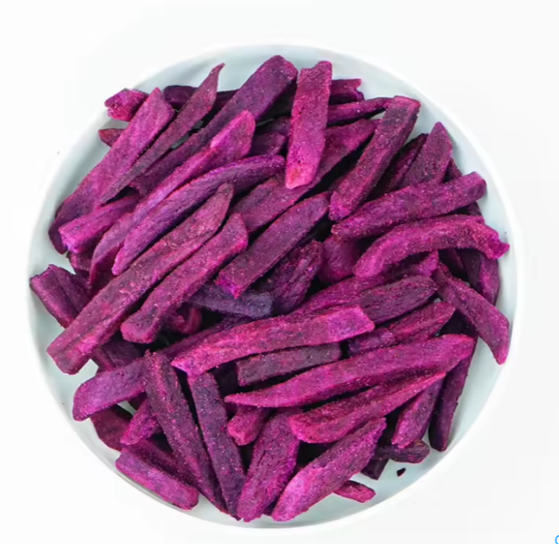
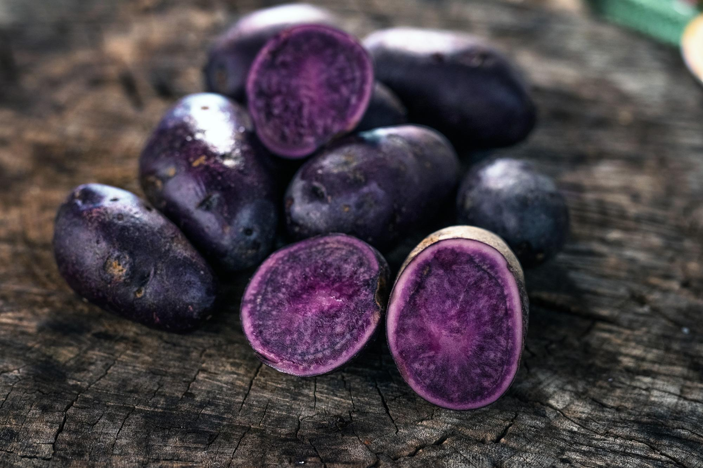

Krompir (Solanum tuberosum) je gomoljnata rastlina, ki izvira iz Južne Amerike. Je osnovno živilo, bogato z ogljikovimi hidrati, vitamini in minerali. Uporablja se v številnih jedeh, kot so pire, pečen krompir in krompirjev čips.

